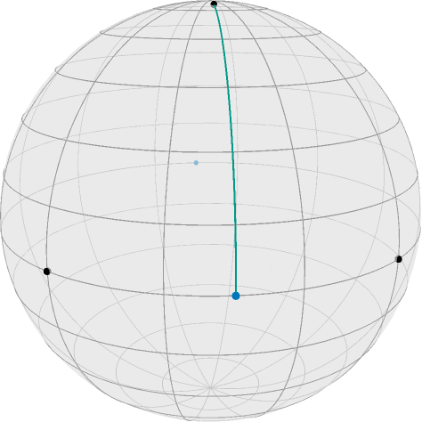
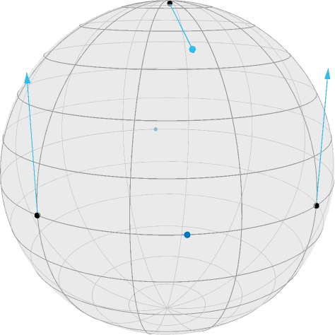
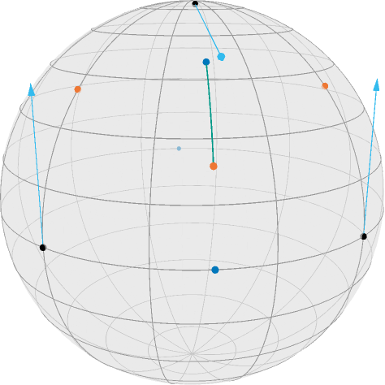
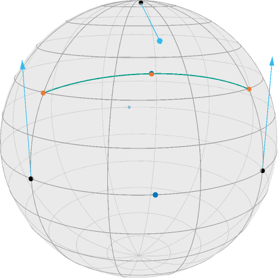

Illustration of the Gradient of a Second Order Difference
This example explains how to compute the gradient of the second order difference mid point model using adjointJacobiFields.
This example also illustrates the Power manifold as well as ArmijoLinesearch.
We first initialize the manifold
using Manoptand we define some colors from Paul Tol
using Colors
black = RGBA{Float64}(colorant"#000000")
TolVibrantBlue = RGBA{Float64}(colorant"#0077BB") # points
TolVibrantOrange = RGBA{Float64}(colorant"#EE7733") # results
TolVibrantCyan = RGBA{Float64}(colorant"#33BBEE") # vectors
TolVibrantTeal = RGBA{Float64}(colorant"#009988") # geo
asyResolution = 2Assume we have two SnPoints $x,y$ on the equator of the Sphere(2) $\mathcal M = \mathbb S^2$ and a point $y$ near the north pole
M = Sphere(2)
x = SnPoint([1., 0., 0.])
z = SnPoint([0., 1., 0.])
c = midPoint(M,x,z)
y = geodesic(M, SnPoint([0., 0., 1.]), c, 0.1)
[c,y]2-element Array{SnPoint{Float64},1}:
Sn([0.707107, 0.707107, 0.0])
Sn([0.110616, 0.110616, 0.987688])Now the second order absolute difference can be stated as (see [Bačák, Bergmann, Steidl, Weinmann, 2016])
where $\mathcal C_{x,z}$ is the set of all mid points $g(\frac{1}{2};x,z)$, where $g$ is a (not necessarily minimizing) geodesic connecting $x$ and $z$.
For illustration we further define the point opposite of
c2 = opposite(M,c)Sn([-0.707107, -0.707107, -0.0])and draw the geodesic connecting $y$ and the nearest mid point $c$, namely
T = [0:0.1:1.0...]
geoPts_yc = geodesic(M,y,c,T)looks as follows using renderAsymptote with the asyExportS2Signals export
renderAsymptote("secondOrderData.asy",asyExportS2Signals;
render = asyResolution,
curves = [ geoPts_yc ],
points = [ [x,y,z], [c,c2] ],
colors=Dict(:curves => [TolVibrantTeal], :points => [black, TolVibrantBlue]),
dotSize = 3.5, lineWidth = 0.75, cameraPosition = (1.2,1.,.5)
)
Since we moved $y$ 10% along the geodesic from the north pole to $c$, the distance to $c$ is $\frac{9\pi}{20}\approx 1.4137$, and this is also what
costTV2(M, (x,y,z) )1.413716694115407returns, see costTV2 for reference. But also its gradient can be easily computed since it is just a distance with respect to $y$ and a concatenation of a geodesic, where the start or end point is the argument, respectively, with a distance. Hence the adjoint differentials AdjDxGeo and AdjDyGeo can be employed, see gradTV2 for details. we obtain
(ξx, ξy, ξz) = gradTV2(M, (x,y,z) )(SnT([-0.0, -4.9677e-18, -0.707107]), SnT([-0.698401, -0.698401, 0.156434]), SnT([4.9677e-18, 0.0, -0.707107]))When we aim to minimize this, we look at the negative gradient, i.e. we can draw this as
renderAsymptote("SecondOrderGradient.asy",asyExportS2Signals;
render = asyResolution,
points = [ [x,y,z], [c,c2] ],
tVectors = [TVectorE.( [-ξx, -ξy, -ξz], [x, y, z] )],
colors=Dict(:tvectors => [TolVibrantCyan], :points => [black, TolVibrantBlue]),
dotSize = 3.5, lineWidth = 0.75, cameraPosition = (1.2,1.,.5)
)
If we now perform a gradient step, we obtain the three points
xn, yn, zn = exp.(Ref(M), [x,y,z], [-ξx,-ξy,-ξz])3-element Array{SnPoint{Float64},1}:
Sn([0.760245, 4.56395e-18, 0.649637])
Sn([0.64745, 0.64745, 0.402015])
Sn([-4.56395e-18, 0.760245, 0.649637])as well we the new mid point
cn = midPoint(M,xn,zn)
geoPts_yncn = geodesic(M,yn,cn,T)and obtain the new situation
renderAsymptote("SecondOrderMin1.asy",asyExportS2Signals;
render = asyResolution,
points = [ [x,y,z], [c,c2,cn], [xn,yn,zn] ],
curves = [ geoPts_yncn ] ,
tVectors = [TVectorE.( [-ξx, -ξy, -ξz], [x, y, z] )],
colors=Dict(:tvectors => [TolVibrantCyan],
:points => [black, TolVibrantBlue, TolVibrantOrange],
:curves => [TolVibrantTeal]
),
dotSize = 3.5, lineWidth = 0.75, cameraPosition = (1.2,1.,.5)
)
One can see, that this step slightly “overshoots”, i.e. $y$ is now even below $c$. and the cost function is still at
costTV2(M, (xn, yn, zn) )0.4657942881828864But we can also search for the best step size using ArmijoLinesearch on the Power manifold $\mathcal N = \mathcal M^3 = (\mathbb S^2)^3$
p = PowPoint([x,y,z])
N = Power(M,3)
s = ArmijoLinesearch(1.0,exp,0.999,0.96)(N, p,
x -> costTV2(M, Tuple(getValue(x))),
PowTVector( [ gradTV2(M, (x,y,z))... ] ) # transform from tuple to PowTVector
)0.7348020742679654and for the new points
xm, ym, zm = exp.(Ref(M), [x,y,z], s*[-ξx,-ξy,-ξz])
cm = midPoint(M,xm,zm)
geoPts_xmzm = geodesic(M,xm,zm,T)we obtain again with
renderAsymptote("SecondOrderMin2.asy",asyExportS2Signals;
render = asyResolution,
points = [ [x,y,z], [c,c2,cm], [xm,ym,zm] ],
curves = [ geoPts_xmzm ] ,
tVectors = [TVectorE.( [-ξx, -ξy, -ξz], [x, y, z] )],
colors=Dict(:tvectors => [TolVibrantCyan],
:points => [black, TolVibrantBlue, TolVibrantOrange],
:curves => [TolVibrantTeal]
),
dotSize = 3.5, lineWidth = 0.75, cameraPosition = (1.2,1.,.5)
)
Here, the cost function yields
costTV2( M, (xm, ym, zm) )0.0012555303253956782which is nearly zero, as one can also see, since the new center $c$ and $y$ are quite close.
Literature
- [Bačák, Bergmann, Steidl, Weinmann, 2016]
Bačák, M; Bergmann, R.; Steidl, G; Weinmann, A.:
A second order nonsmooth variational model for restoring manifold-valued images. , SIAM Journal on Scientific Computations, Volume 38, Number 1, pp. A567–597, doi: 10.1137/15M101988X